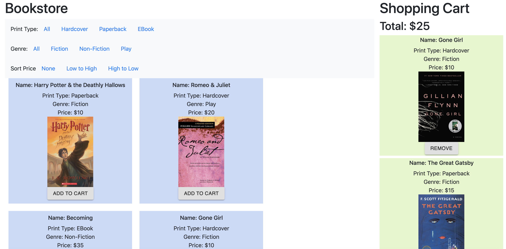

Development
PROBLEM: How can we create applications with live states to best cater to a user's constant interactions and needs?
In this project, I created a list interface with live filtering and sorting functions to reflect the live states that applications have. I chose to implement an online bookstore with a browsing section and a shopping cart. Users can filter the books by genre and print type, can sort by price, and can add and remove items from the cart, with the cart reflecting their most updated totals. This project was super interesting, as I got to understand the live user experience and how users trigger application state changes on a much deeper level by programming in React!
The process included the following steps:
- Building the list of items in my browsing section
- Implementing the filtering and sorting functions
- Creating an aggregator that adds and removes items from the shopping cart
Online Bookstore
USER RESEARCH
In thinking about user research, I thought about the goals and values of this application from the users' perspective. The goal of this application is for users to easily browse and shop for books. The application enables this by using React, which allows for the state of the page to be updated by the users' actions. The value to the user is primarily an effective book browsing and shopping model that helps them better find the books they're interested in. This is achieved through:

Throughout the design of the page, I considered user interface design principles to create a more efficient and intuitive page through the following designs:
KEY TAKEAWAYS
- Understanding the organization of the components and how data is passed down through components is critical in a successful in a React application
- Integrate how user actions can trigger component state changes into the design thinking
- There is a lot of complexity in evaluating how to turn user interactions into data and actionable elements of code